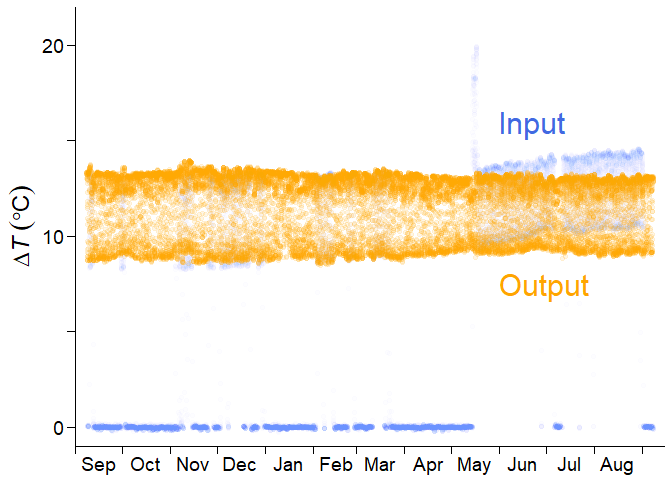

Overview
The goal of fluxfixer is to automatically post-process sap flow data measured by the thermal dissipation method.
Notably, this package can detect outliers and fill data gaps using a machine learning method that takes environmental variables as input. These quality control protocols can also be applied to other types of raw time series with many artifacts.
fluxfixer provides various functions that can detect aberrant structural changes in time series dynamics, correct such time series, and calculate sap flux density with different methods for deriving zero-flow conditions.
Basically, you can conduct the whole process by executing only one function, run_fluxfixer(). Optionally, you can apply each process step-by-step using the functions such as:
-
check_absolute_limits()eliminates physically unreasonable values. -
modify_short_drift()corrects short-term signal drifts. -
filter_highfreq_noise()filters high-frequency noise from the time series. -
remove_zscore_outlier()detects and removes outliers by Z-score transformation. -
remove_rf_outlier()detects and removes outliers by a random forest model. -
fill_gaps()imputes all missing values in the time series by a random forest model. -
retrieve_ts()converts a standardized Z-score time series into a time series in its original units while conducting detrending and signal damping correction.
For sap flow data processing:
-
calc_dtmax()estimates the reference values of observed temperature difference between probes under zero-flow conditions (dTmax) with multiple methods. -
calc_fd()calculates sap flux density, considering the heartwood correction.
You can learn more about how to use them in browseVignettes("fluxfixer").
Installation
You can install the latest version of fluxfixer from CRAN with:
install.packages("fluxfixer")Or, you can install the development version from GitHub with:
# install.packages("remotes")
remotes::install_github("yhata86/fluxfixer")Example
Assume that you have conducted a sap flow measurement in Malaysia from Sep. 2012 to Aug. 2013, and obtained a half-hourly time series below:

where is the temperature difference between sap flow probes, which will be used in calculating the sap flux density ().
You may feel upset since the time series has:
- many values near zero due to power supply shortages
- short-term drift in May, just after sensor replacement
- long-term trend of the daily maximum value because of sensor degradation
Do not worry. fluxfixer can rescue this time series and output a continuous, stationary time series.
To begin with, you prepare a dataset containing raw and other environmental variables, and specify the timestamps of the events.
## Load sample data
data("dt_noisy")
## Specify the period of the short-term drift
time_drft_head <- as.POSIXct("2013/05/14 13:30", tz = "Etc/GMT-8")
time_drft_tail <- as.POSIXct("2013/05/17 15:00", tz = "Etc/GMT-8")
## Specify the sensor replacement timing
time_prd_tail <- as.POSIXct("2013/05/14 13:00", tz = "Etc/GMT-8")Then, the only thing you need is to execute run_fluxfixer() as:
## Run all processes automatically
result <-
run_fluxfixer(df = dt_noisy,
colname_time = "time",
colname_target = "dt",
vctr_time_drft_head = time_drft_head,
vctr_time_drft_tail = time_drft_tail,
vctr_time_prd_tail = time_prd_tail,
detrend = TRUE)You can derive a data frame containing the post-processed time series below.

The output data frame also contains time series, which you ultimately want. Here is an example of the post-processed half-hourly time series in Feb. 2013.

The shaded area represents the gap-filled period by the random forest model. You can see that the imputed time series reproduced the diurnal cycle of the non-imputed time series successfully.